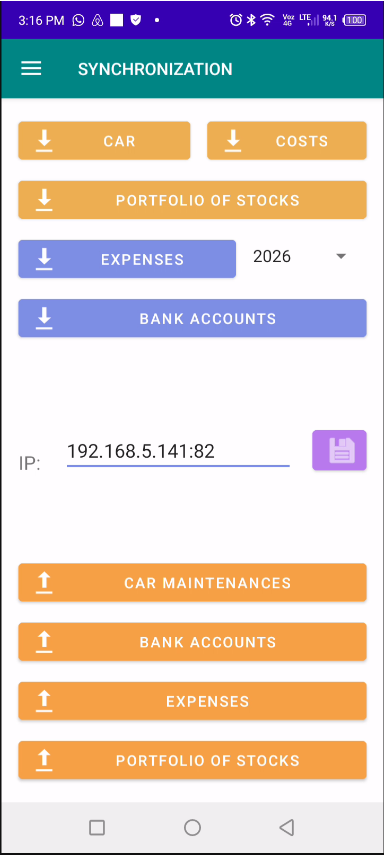

Tableau de Bord de Gestion de Maintenance des Véhicules
Interface principale de bureau utilisée pour gérer les calendriers d’entretien, les historiques de service, le suivi des réparations et l’historique complet de maintenance du véhicule.

Analyse du Coût du Carburant par KM
Graphique analytique affichant le coût du carburant par kilomètre au cours des 12 derniers mois pour une évaluation précise des coûts d’exploitation à long terme.

Analyse de Dispersion Coût de Maintenance vs Kilométrage
Graphique de dispersion positionnant le coût de maintenance sur l’axe Y et le kilométrage sur l’axe X afin de visualiser les modèles de réparation et les comportements de maintenance.

Interface de Demande de Support Technique
Fenêtre de support intégrée permettant aux utilisateurs de demander une assistance technique, signaler des problèmes et recevoir une aide directe.

Interface de Synchronisation Mobile
Fenêtre de synchronisation utilisée pour connecter de manière sécurisée l’application mobile au logiciel de bureau afin d’assurer un transfert de données de maintenance en temps réel.

Module Mobile de Gestion de Maintenance
Interface de l’application mobile permettant de gérer les tâches de maintenance à distance tout en maintenant une synchronisation centralisée avec le logiciel de bureau.

Niveaux d’Urgence de Maintenance du Véhicule
Spinner intelligent affichant les tâches de maintenance avec des indicateurs d’urgence codés par couleur : rouge pour critique, orange pour prochainement nécessaire et jaune pour la planification future.

Coût de Maintenance Groupé par Niveau d’Urgence
Visualisation des dépenses de maintenance regroupées par niveau d’urgence afin d’aider à prioriser le budget et la planification des services.